Milvus · 核心原理图谱
向量数据库:向量索引(HNSW/IVF)做近邻检索,存算分离 + 流批分离,标量过滤 + 向量召回混合。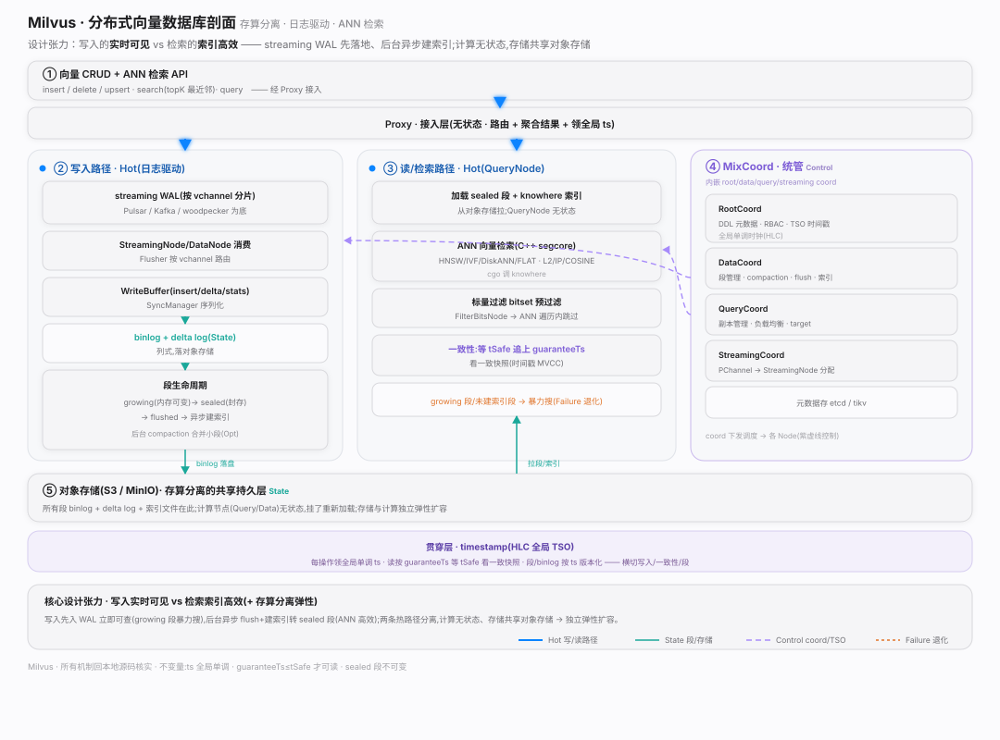
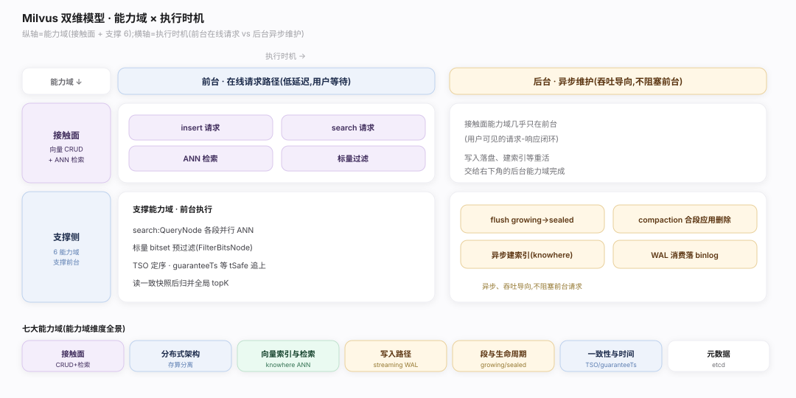
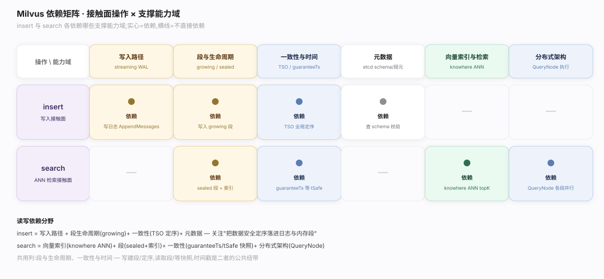
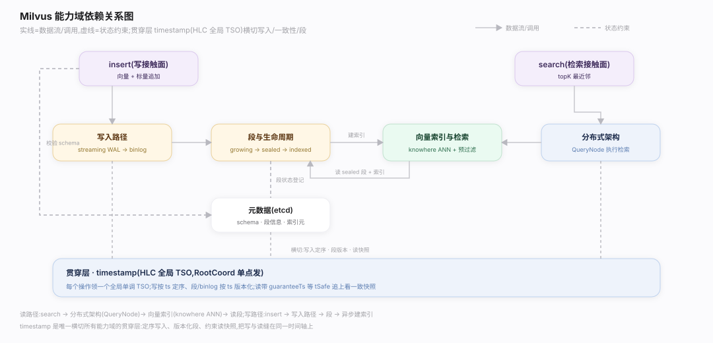
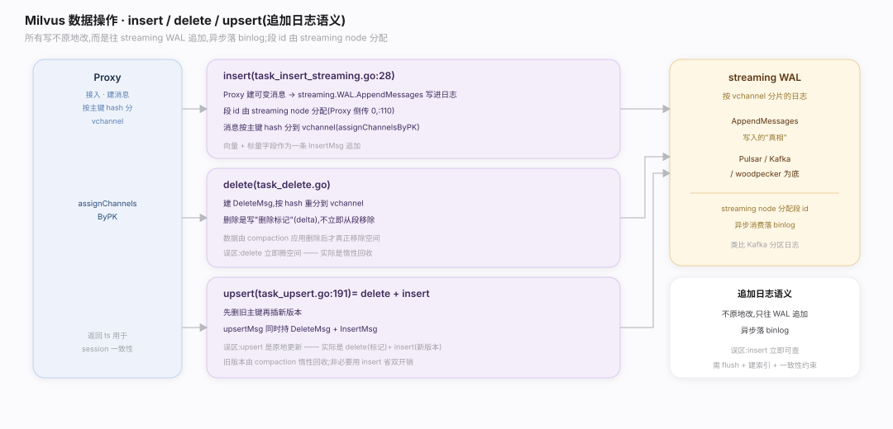
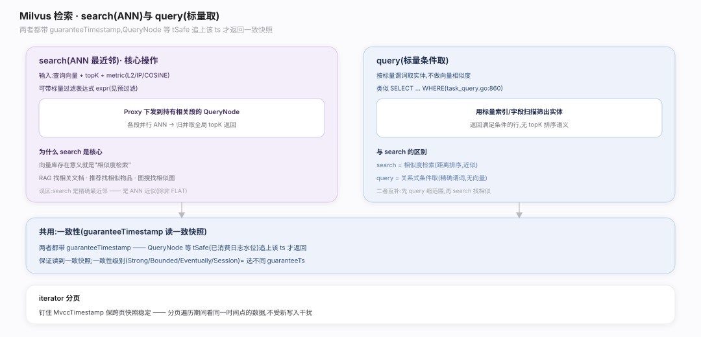
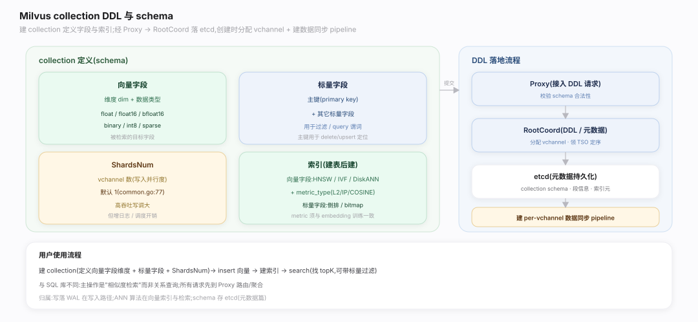
internal/proxy/)。| 结构 | 定义 | 职责 |
|---|---|---|
| insertTask.Execute | internal/proxy/task_insert_streaming.go:28 | insert → WAL |
| assignChannelsByPK | internal/proxy/util.go:2602 | 按主键 hash 分 vchannel |
| deleteTask | internal/proxy/task_delete.go:38 | 删除标记(delta) |
| repackDeleteMsgByHash | internal/proxy/task_delete.go:150 | delete 按 hash 重分 vchannel |
| upsertTask | internal/proxy/task_upsert.go:46 | delete+insert(upsertMsg :50) |
| searchTask | internal/proxy/task_search.go:65 | ANN 检索(guaranteeTs :286) |
| queryTask | internal/proxy/task_query.go:54 | 标量 query(guaranteeTs :859) |
| DefaultShardsNum | pkg/common/common.go:77 | vchannel 数(默认 1) |
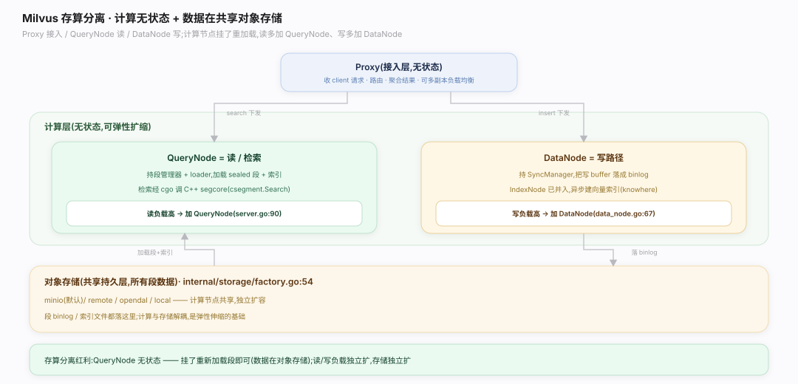
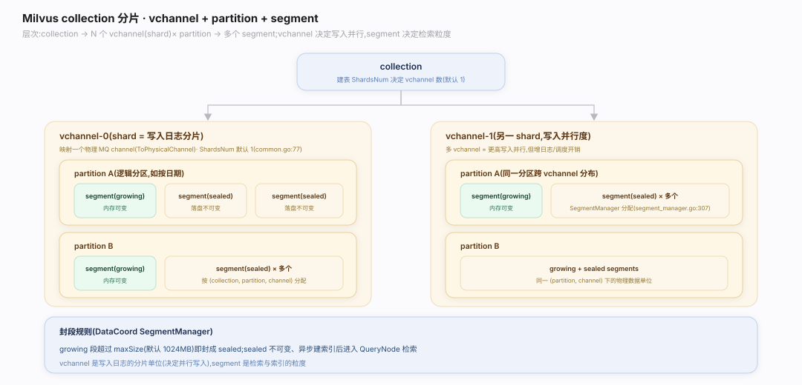
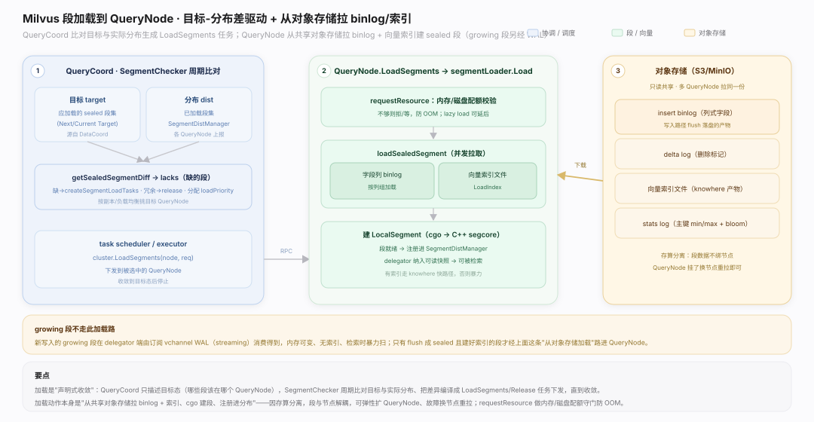
internal/coordinator/、internal/proxy/、internal/querynodev2/、internal/datanode/)。internal/datanode/index/),仍注册 IndexNode gRPC 服务但不是独立进程。| 结构 | 定义 | 职责 |
|---|---|---|
| MixCoord | internal/coordinator/mix_coord.go:51 | 内嵌四协调器的统管进程 |
| RootCoord | internal/rootcoord/root_coord.go:131 | DDL 元数据 + RBAC + TSO |
| DataCoord | internal/datacoord/server.go:94 | 段管理 + compaction + flush |
| QueryNode | internal/querynodev2/server.go:90 | 读/检索(cgo segcore) |
| DataNode | internal/datanode/data_node.go:67 | 写 binlog + 建索引 |
| 对象存储 factory | internal/storage/factory.go:54 | minio/remote/local 持久层 |
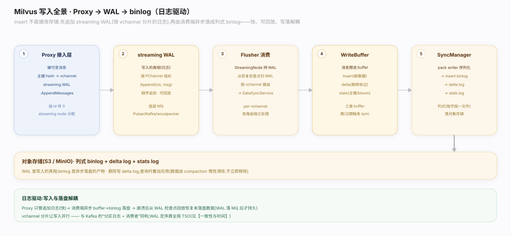
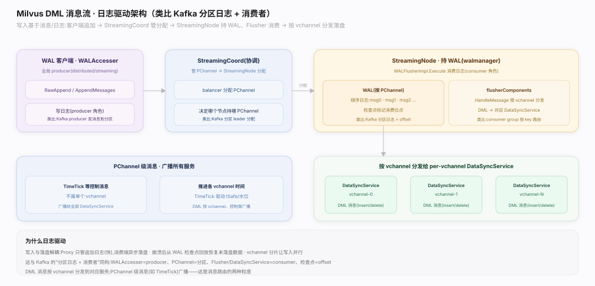
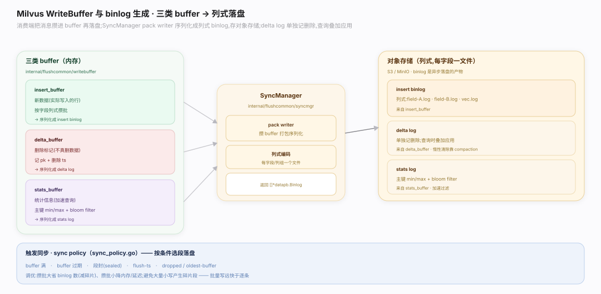
internal/proxy/、internal/streamingnode/、internal/flushcommon/)。| 结构 | 定义 | 职责 |
|---|---|---|
| insertTask.Execute | internal/proxy/task_insert_streaming.go:28 | Proxy 追加 WAL |
| WALAccesser | internal/distributed/streaming/streaming.go:159 | 全局 WAL 客户端(Append :194) |
| WAL | internal/streamingnode/server/wal/wal.go:19 | 按 PChannel 的写日志(Append :39) |
| WALFlusherImpl | internal/streamingnode/.../wal_flusher.go:62 | 消费 WAL → 落盘(Execute :75) |
| flusherComponents.HandleMessage | internal/streamingnode/.../flusher_components.go:120 | 按 vchannel 路由消息 |
| WriteBuffer | internal/flushcommon/writebuffer/write_buffer.go:52 | insert/delta/stats 三 buffer |
| SyncManager.SyncData | internal/flushcommon/syncmgr/sync_manager.go:115 | buffer → binlog 对象存储 |
| SyncPolicy | internal/flushcommon/writebuffer/sync_policy.go:17 | 满/过期/段封/flush-ts 触发 |
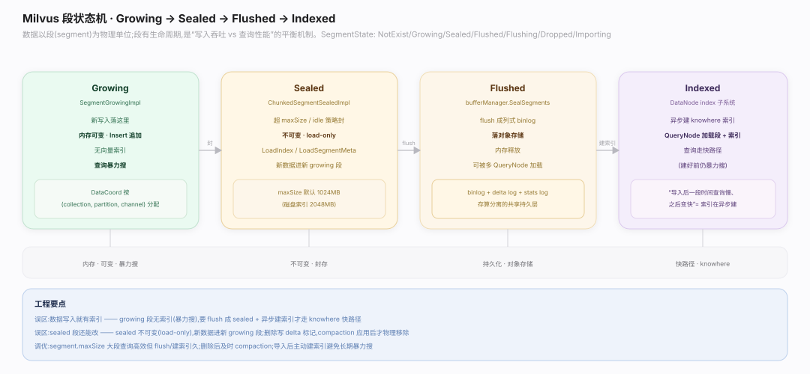
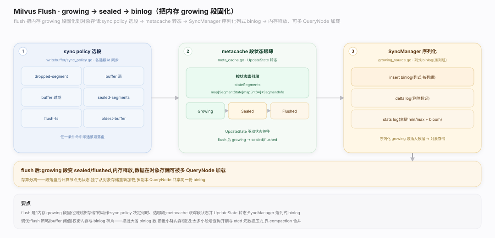
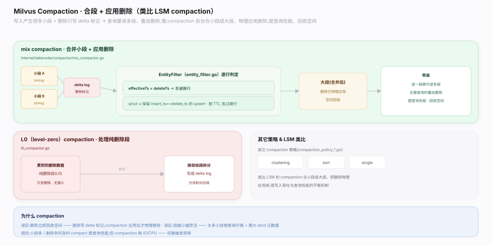
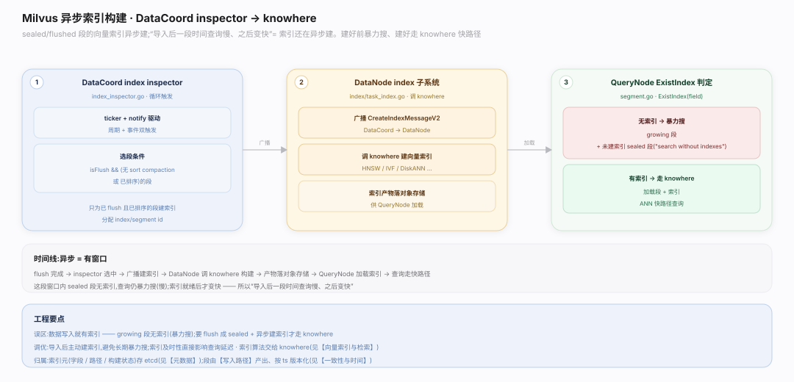
internal/datacoord/、internal/core/src/segcore/)。| 结构 | 定义 | 职责 |
|---|---|---|
| SegmentState | commonpb enum | Growing/Sealed/Flushed/… |
| SegmentGrowing / Impl | core/src/segcore/SegmentGrowing.h:25 / SegmentGrowingImpl.h:84 | 内存可变段 |
| SegmentSealed | core/src/segcore/SegmentSealed.h:33 | 不可变 load-only 段 |
| SegmentManager | internal/datacoord/segment_manager.go:307 | 分配 growing 段 + seal 策略 |
| mixCompactionTask | internal/datanode/compactor/mix_compactor.go:51 | 合段 + 应用删除(Compact :430) |
| LevelZeroCompactionTask | internal/datanode/compactor/l0_compactor.go:49 | 纯删除段 → delta log(Compact :117) |
| EntityFilter | internal/compaction/entity_filter.go:10 | 合并时丢被删/过期行(Filtered :50) |
| ExistIndex | internal/querynodev2/segments/segment.go:684 | 判段有无向量索引 |
| index_inspector | internal/datacoord/index_inspector.go:86 | 异步索引构建触发 |
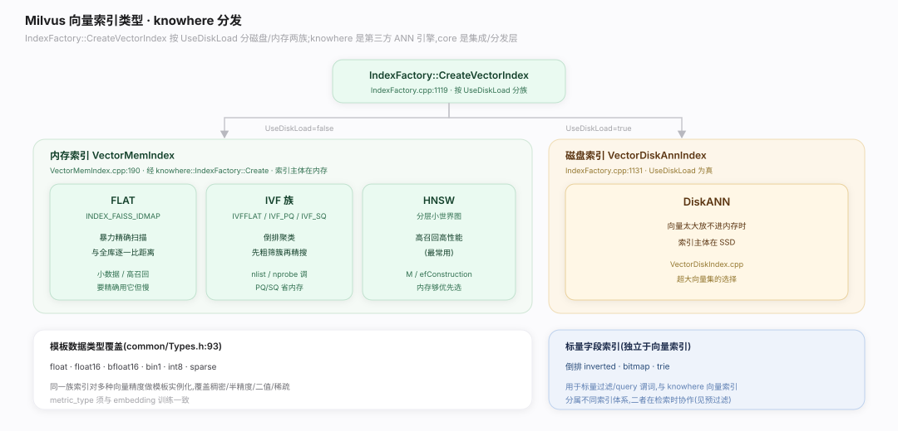
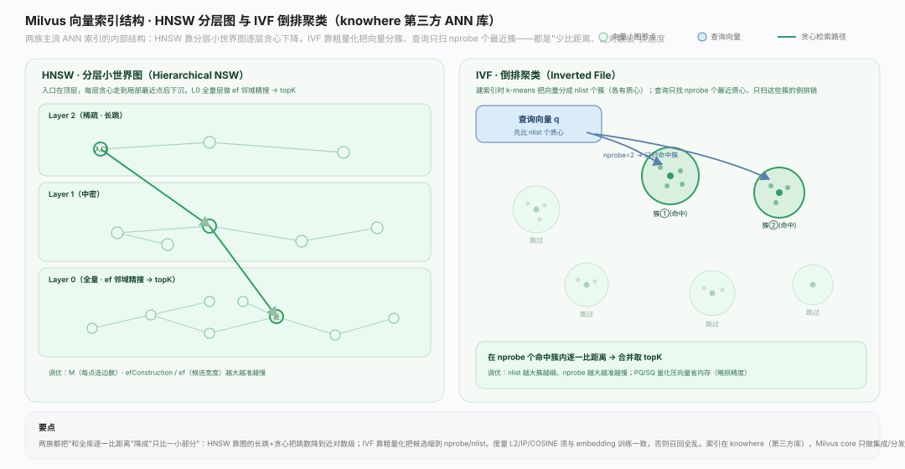
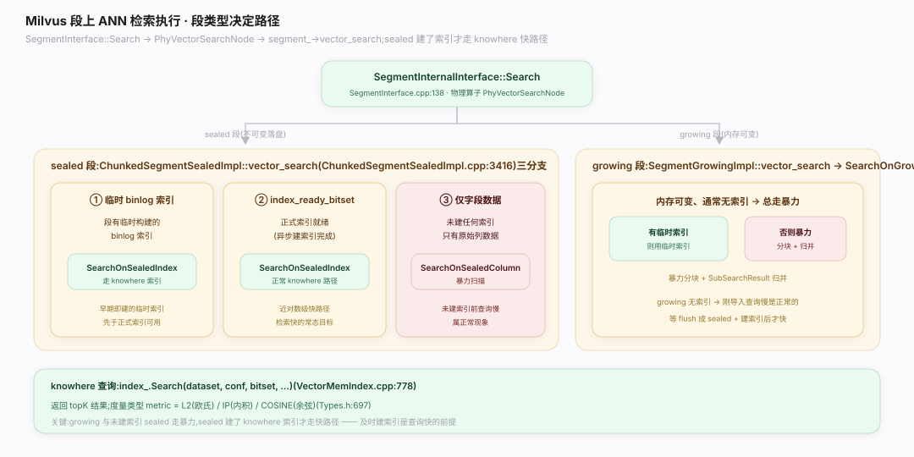
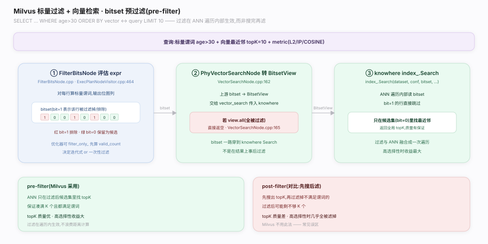
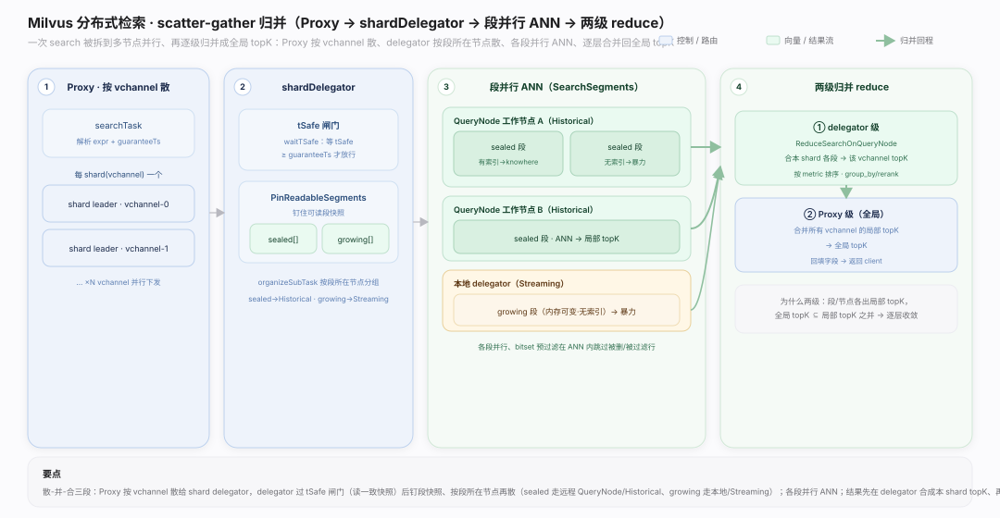
internal/core/,C++ + knowhere)。| 结构 | 定义 | 职责 |
|---|---|---|
| IndexFactory::CreateVectorIndex | core/src/index/IndexFactory.cpp:1119 | 按 disk/mem 分发向量索引 |
| VectorMemIndex | core/src/index/VectorMemIndex.cpp:190 | 内存索引(HNSW/IVF/FLAT)knowhere |
| VectorDiskAnnIndex | core/src/index/VectorDiskIndex.cpp | DiskANN 磁盘索引 |
| ChunkedSegmentSealedImpl::vector_search | core/src/segcore/ChunkedSegmentSealedImpl.cpp:3416 | sealed 段检索三分支 |
| FilterBitsNode | core/src/exec/operator/FilterBitsNode.cpp | 标量谓词→bitset |
| PhyVectorSearchNode | core/src/exec/operator/VectorSearchNode.cpp:162 | bitset→ANN 检索 |
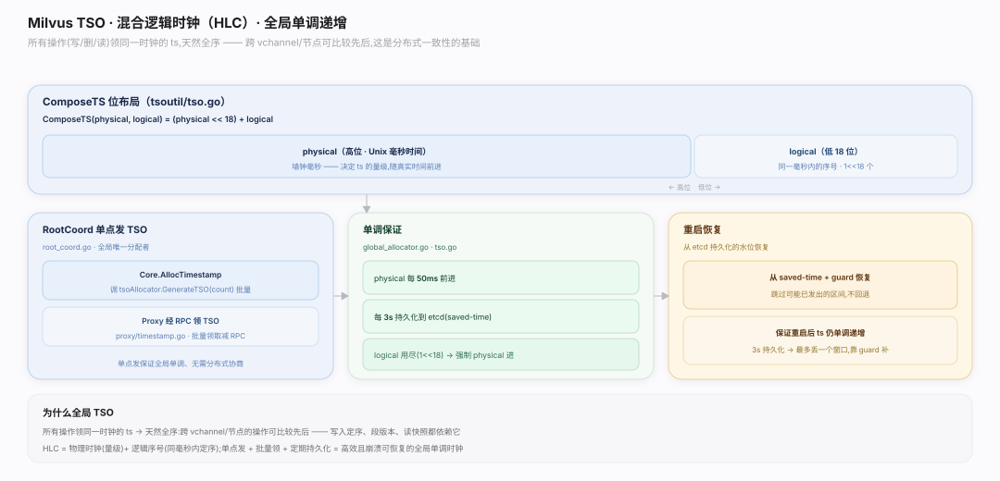
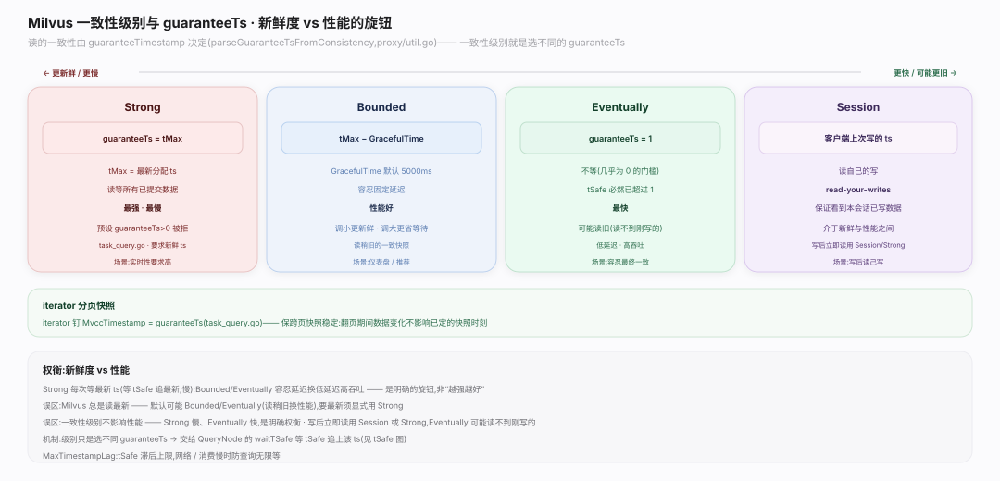
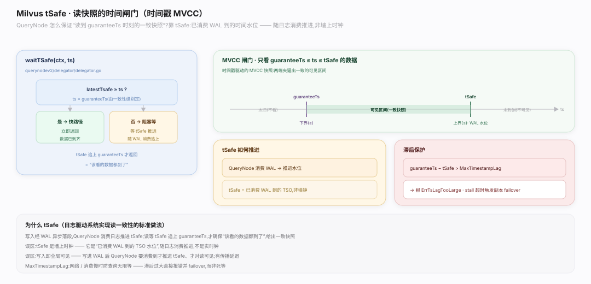
internal/tso/、internal/proxy/、internal/querynodev2/)。| 结构 | 定义 | 职责 |
|---|---|---|
| ComposeTS / TSO | pkg/util/tsoutil/tso.go:26 | HLC 时间戳(physical<<18+logical) |
| Core.AllocTimestamp | internal/rootcoord/root_coord.go:1793 | RootCoord 单点发 TSO |
| parseGuaranteeTsFromConsistency | internal/proxy/util.go:1301 | 一致性级别→guaranteeTs |
| waitTSafe | internal/querynodev2/delegator/delegator.go:488 | 等 tSafe 追上 guaranteeTs |
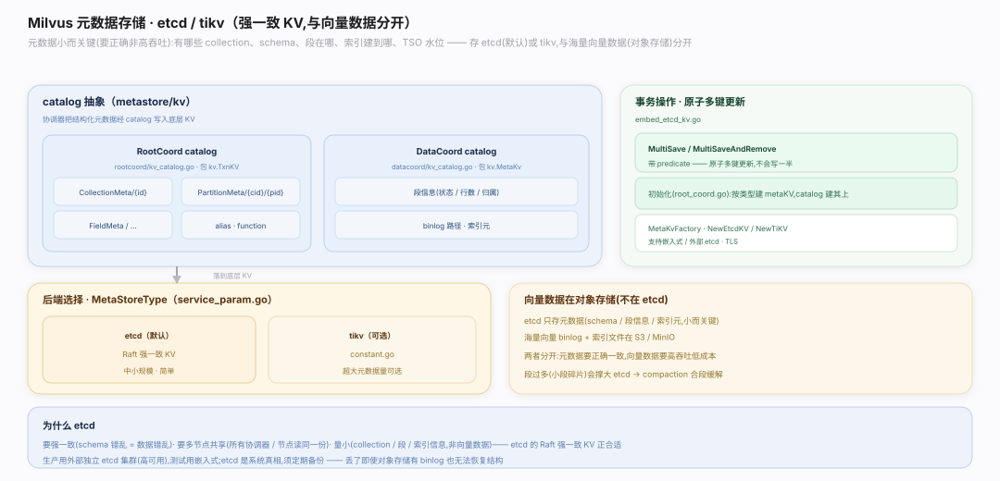
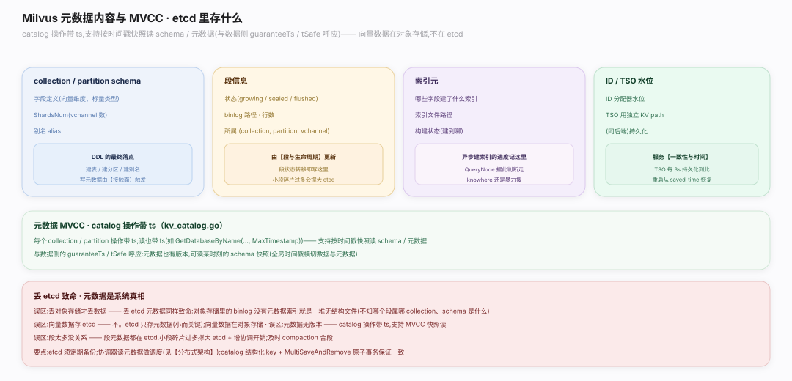
internal/metastore/、internal/kv/)。| 结构 | 定义 | 职责 |
|---|---|---|
| MetaStoreType | pkg/util/paramtable/service_param.go:544 | etcd(默认 constant.go:31)/ tikv :32 |
| RootCoord catalog | internal/metastore/kv/rootcoord/kv_catalog.go:176 | collection/partition/field 元(CreateCollection) |
| CreateDatabase(ts) | internal/metastore/kv/rootcoord/kv_catalog.go:128 | 元数据带 ts(MVCC 快照) |
| DataCoord catalog | internal/metastore/kv/datacoord/kv_catalog.go:51 | 段/binlog 路径元(NewCatalog :59) |
| AddSegment | internal/metastore/kv/datacoord/kv_catalog.go:264 | 落段元 |
| initKVCreator | internal/rootcoord/root_coord.go:369 | 按类型建 metaKV(NewEtcdKV :378) |
| MetaKvFactory | internal/kv/etcd/metakv_factory.go:78 | 建 etcd KV(嵌入/外部/TLS) |
| MultiSave | internal/kv/etcd/embed_etcd_kv.go:400 | 原子多键写 |
| MultiSaveAndRemove | internal/kv/etcd/embed_etcd_kv.go:471 | 原子多键事务(带 predicate) |